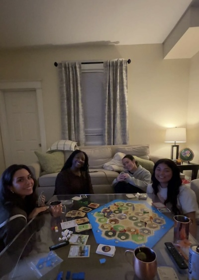

Born in 2003, I am a Biomedical Engineering student at the University of Cincinnati going into my 5th year starting in Fall 2026. I have a strong passion for innovation, leadership, and problem solving. I'e grown a love for Engineering as well as learned how skilled I could be at leading and teaching others, in which I take great pride in.
Growing up, they always asked me what I wanted to be when I grew up. I always said I wanted to be an inventor. I was quickly told that it wasn't an occupation (which I wasn't sure why). I continued to pursue Biomedical Engineering for my love